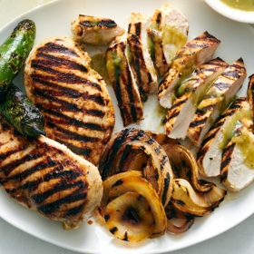

← All recipes
Jalapeño Grilled Chicken Breasts

Servings: 4 servings · Prep: 5 min · Cook: 55 min
Ingredients
- 1/2 white onion, chopped
- 2 large jalapeños, seeded
- 2 large garlic cloves
- 1 tablespoon sake or soju (optional)
- 2 teaspoons coarse kosher salt, such as Morton, or coarse sea salt
- 1/2 teaspoon freshly ground black pepper, plus more to taste
- 2 pounds boneless, skinless chicken breasts or thighs
- Olive oil, for grilling
- Green pepper hot sauce, for serving (optional)
Directions
- In a blender or food processor, blend the onion, jalapeños, garlic, sake (if using), salt, pepper and 1/4 cup water until smooth and foamy.
- Place the chicken in a resealable plastic bag and pour the marinade over. Seal the bag and smoosh it around to coat the chicken in the marinade. Place the bag in a bowl and refrigerate until ready to grill, at least 30 minutes and up to 48 hours. (Alternatively, you can marinate the chicken in a bowl or resealable container.)
- Heat an outdoor grill over medium-high. Clean the grill grates. Wad up a paper towel, dip it in oil and, holding it with tongs, rub it against the grates to grease them.
- Take the chicken out of the marinade, let some of the marinade drip off and place on the grill. Cook the chicken, covered if using a gas grill, flipping once or twice, until browned on both sides and the internal temperature in the thickest part of the breast or thigh reads 165 degrees, 8 to 12 minutes total. Transfer to a cutting board and let the chicken rest for at least 10 minutes so the juices can settle before slicing and serving, with hot sauce, if desired.
Original source: cooking.nytimes.com